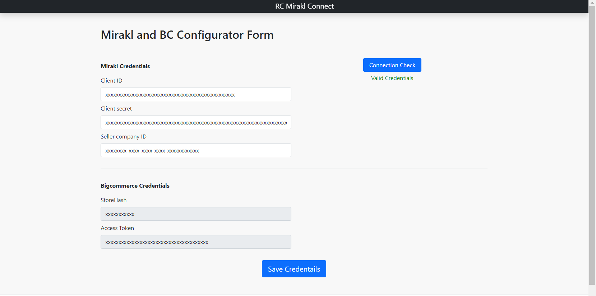

The RC Mirakl Connect App makes use of the data flow between BigCommerce and Mirakl and will facilitate real-time data synchronisation between various systems.
Our Connector App's cleverly pre-built API connection eliminates the hassle of utilising custom platform integrations to handle various Catalogue Data, such as products and allows clients to place orders while holding unified management of goods, orders, etc. within the app.
The detailed instructions for managing categories, goods, and order sync from Bigcommerce to Mirakl store are provided here. The app is ready to use after it has been installed.
The 'Mirakl and BC Configuration Form' should appear once the 'RC Mirakl Connect' app has been installed.
Get the Mirakl Connect Credentials (i.e., Client Id, Client Secret and Seller Company Id) and enter the credentials in their respective input boxes and click the Connection Check button.
Once your connection is validated successfully, then click on the Save Credentials button.
Once the credentials are saved you should see the RC Mirakl Connect App Dashboard page
The RC Mirakl Connect home page provides a quick summary of the Products and Orders sync up between BigCommerce and Mirakl. You can see the total count of each Products and Orders synced between them.
The Products section helps users to know the total number of products synced from BigCommerce to Mirakl.
The Orders section helps users to know the total number of orders synced between Mirakl and BigCommerce.
The product listing page shows the list of products synced between BigCommerce to Mirakl.
Product Name: this is the name of the product which is created in Mirakl.
Product sku: is the SKU id of the product from BigCommerce.
Price: This is the Price of the products from BigCommerce.
Discount Price:This is the sale price of the products from BigCommerce.
Created at:This is the time of the offers synchronized in Mirakl.
The left side menu helps the user synchronize the data manually from BigCommerce to Mirakl using synchronize buttons as shown in the screenshot below:
The order listing page shows the list of orders synced between Mirakl to BigCommerce.
Mirakl Order ID: is the unique order ID created when the order is placed in Mirakl
Mirakl Order Status: is the status of the order in Mirakl. When the status of the order changes in Mirakl that corresponding status is shown here.
BC Order ID: is the order ID generated when the order is placed in BigCommerce.
BC Order Status:shows the corresponding status of the order to the user. When the status of the order is changed in BigCommerce that corresponding status is shown here.
Processing Status from Mirakl:When the order/status is placed in Mirakl that order needs to be synced up in BigCommerce. Before the order/status is synced from Mirakl to BigCommerce the processing status will be Pending. Once the order/status is synced from Mirakl to BigCommerce the processing status is changed to Completed.
Processing Status from BC: When the status is changed in BigCommerce the order status needs to be synchronized in Mirakl. Before the status is synchronized from BigCommerce to Mirakl the processing status will be Pending. Once the status is synchronized from BigCommerce to Mirakl the processing status is changed to Completed.
Note:
The below order status from Mirakl is not going to be synchronized from Mirakl to BigCommerce
The left side menu helps the user synchronize the data manually from BigCommerce to Mirakl using synchronize buttons as shown in the screenshot below:
Users can also manually Synchronize the orders/status from Mirakl to BigCommerce and the status from BigCommerce to Mirakl by clicking on the Orders (BC to Mirakl) Synchronizebutton.
Users can manually sync the status from Mirakl to BigCommerce and vice-versa by clicking the ,‘Orders Status Sync’ Synchronize button.
Thanks for using RC Mirakl Connect.